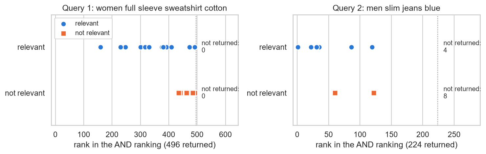
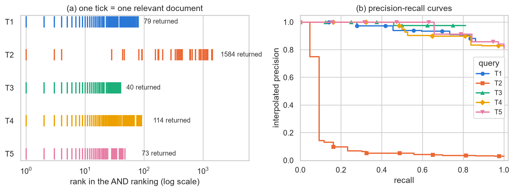

| Students | u233738, u233436, u232597 |
| GitHub | https://github.com/victorbrull/irwa-search-engine |
| Tag | IRWA-2026-part-2 |
In this part we build the inverted index and the TF-IDF ranking on top of the corpus of Part 1, we implement the seven evaluation
metrics, and we evaluate the system with the two validation queries and with five queries of our own, for which we also produce
the relevance judgments. The Part 1 code is used without any change: preprocess_text processes documents and
queries, and the processed corpus reproduces the figures of Part 1 (1.26M terms, vocabulary of 5,865).
The code is in the notebook indexing_evaluation.ipynb and in three small modules (indexing.py,
evaluation.py, judgments.py) with tests (test_part2.py). Every number of this report is
written by the notebook in results/, and we recomputed all the metrics with a second, independent implementation.
We index the merged field all_terms of Part 1 (title + description + brand + sub_category + product_details values),
which is the field that Part 1 kept for the basic TF-IDF index. The structure is the vocabulary of the practical labs, with the term
frequency added: every term has an id and postings[term_id] = [(doc_id, tf), …], sorted by doc_id. Sorted lists allow a linear
intersection, and storing tf lets TF-IDF be computed from the index alone.
| Index statistics | Value |
|---|---|
| Documents (N) | 28,080 |
| Vocabulary (terms) | 5,865 |
| Postings (term, document) pairs | 875,911 |
| Average / longest postings list | 149.3 / 20,987 (wear) |
| Terms that appear in one document only | 1,332 |
| Average document length (terms) | 44.7 |
| Build time | 0.9 s |
A document is returned only if it contains all the query terms. The query goes through the same preprocess_text
as the documents, and the postings lists are intersected from the shortest (rarest term) to the longest with a two-pointer merge,
so the intermediate result is as small as possible. A term that is not in the vocabulary gives an empty result. We checked the
result against a brute-force scan of the collection for the seven queries. For example, query 1 has five terms with document
frequencies 13,826 (women), 7,177 (full), 18,034 (sleev), 1,420 (sweatshirt) and 19,905 (cotton), and 496 documents contain all of them.
The statement suggests choosing popular terms. We ranked all the terms by the TF-IDF weight they carry in the whole collection (sum over the documents of (1 + log2 tf)·log2(N / df), so a term scores high when it is frequent and discriminative). The top terms are attributes (round, neck, print, solid, regular, fit, blue, black, slim, full), product types (tshirt, shirt, polo) and gender (women, men). Each of our five queries combines popular terms of different kinds and was designed to show a different behaviour of the system. We also needed queries whose relevant documents can be defined from the visible attributes of a product (section 7).
| Id | Query | Terms after pre-processing | df of each term | AND matches | What it tests |
|---|---|---|---|---|---|
| T1 | men black track pants polyester | men black track pant polyest | 14251, 6313, 1815, 2028, 3033 | 79 | attribute combination with popular terms (colour, fabric, product type) |
| T2 | women black v neck tshirt | women black neck tshirt | 13826, 6313, 14585, 13063 | 1,584 | V neck: the 1-character token 'v' is removed by the Part 1 pre-processing |
| T3 | men grey hooded sweatshirt | men grey hood sweatshirt | 14251, 3046, 920, 1420 | 40 | stemming and indexed values: 'hooded' / 'Hooded: Yes' |
| T4 | women striped shirt | women stripe shirt | 13826, 1464, 4813 | 114 | 'shirt' vs 'tshirt' and other products that mention shirts in their text |
| T5 | men denim jacket | men denim jacket | 14251, 1778, 1097 | 73 | a fabric that is also a product type ('denim' appears in jeans, shirts, jackets) |
The documents returned by the AND are ranked by cosine similarity in the vector space model:
The query weights wt,q use the same formula with the query term frequency. The norm ‖d‖ is computed over all the terms of the document and precomputed, so a long document that contains the query terms among many other terms scores lower than a short one that is about the query. Ties are broken by document id, so the ranking is deterministic. The implementation is tested against a dense NumPy computation on random corpora. As an example, the top 5 of query T1:
| Rank | Score | pid | Title | Brand (as stored) |
|---|---|---|---|---|
| 1 | 0.924 | TKPFZMZSWZN5HKEZ | Solid Men Black Track Pants | — |
| 2 | 0.681 | TKPFWCVUMWW96BEY | Solid Men Black Track Pants | Breakboun |
| 3 | 0.655 | TKPFZDVZVQHWEUVF | Solid Men Black Track Pants | Onei |
| 4 | 0.651 | TKPFPT6HZFHXZ4TN | Solid Men Black Track Pants | Pu |
| 5 | 0.630 | TKPFZ3JRTTXYMHFN | Solid Men Black Track Pants | REEB |
The seven metrics are implemented in evaluation.py. A ranking is a list of pids and the judgments of a query are
{pid: label} with binary labels; a document without judgment is not relevant.
| Metric | Definition |
|---|---|
| P@K | relevant documents in the first K positions / K (if there are fewer than K results, the missing positions are misses) |
| R@K | relevant documents in the first K positions / R, where R is the number of relevant documents of the query |
| F1@K | harmonic mean of P@K and R@K |
| AP@K | (1 / min(K, R)) · Σi≤K P@i · reli. Without cut-off the denominator is R (classic Average Precision) |
| MAP | mean of the Average Precision over the queries |
| MRR | mean over the queries of 1 / (rank of the first relevant document) |
| NDCG@K | DCG@K / IDCG@K, DCG@K = Σi≤K reli / log2(i+1); IDCG@K is the DCG@K of the ideal ranking |
The tests compare them with values computed by hand and with scikit-learn (ndcg_score, average_precision_score)
on 50 random rankings. We report K = 5, 10 and 20.
Protocol for the validation queries. validation_labels.csv judges 20 documents per query, out of 28,080. The system
returns the AND results ranked by TF-IDF, and we keep, in the same order, only the judged documents that it returns (the condensed list
of Sakai, 2007): a document without judgment has not been judged, it is not a non-relevant document. The judged documents that the
system does not return stay in R, so the loss caused by the AND semantics is counted by the recall-oriented metrics. Section 8.2
shows the effect of two other protocols.
Query 1: women full sleeve sweatshirt cotton · Query 2: men slim jeans blue
| Query 1 | Query 2 | Mean | |||||||
|---|---|---|---|---|---|---|---|---|---|
| K=5 | K=10 | K=20 | K=5 | K=10 | K=20 | K=5 | K=10 | K=20 | |
| P@K | 1.000 | 1.000 | 0.650 | 0.800 | 0.600 | 0.300 | 0.900 | 0.800 | 0.475 |
| R@K | 0.385 | 0.769 | 1.000 | 0.400 | 0.600 | 0.600 | 0.392 | 0.685 | 0.800 |
| AP@K (Mean: MAP@K) | 1.000 | 1.000 | 0.950 | 0.800 | 0.569 | 0.569 | 0.900 | 0.785 | 0.760 |
| F1@K | 0.556 | 0.870 | 0.788 | 0.533 | 0.600 | 0.400 | 0.544 | 0.735 | 0.594 |
| NDCG@K | 1.000 | 1.000 | 0.988 | 0.869 | 0.716 | 0.716 | 0.934 | 0.858 | 0.852 |
| Query 1 | Query 2 | Mean | |
|---|---|---|---|
| AP (Mean: MAP) | 0.950 | 0.569 | 0.760 |
| RR (Mean: MRR) | 1.000 | 1.000 | 1.000 |
We act as the expert judges. For every query we wrote guidelines: a product is relevant when it satisfies every attribute that the
query asks for, judged from what a shopper sees (title and product details), not from the presence of the stemmed terms in some field. When
title/details and the free-text description disagree, title and details win. The guidelines are implemented in judgments.py and
applied to all the 28,080 documents for each query, so every document has a label and a reason (a label per document, as asked, and
not only for the documents that we retrieve). After running the rules we read the results: all the documents returned by the AND for T1, T3,
T4 and T5, the 43 relevant documents and a sample of the negatives of T2, and every relevant document that the AND does not return. No label had to be changed.
The labels are in relevance_judgments.csv.
| Id | Query | Relevant if the product is… |
|---|---|---|
| T1 | men black track pants polyester | Track pants (not a track suit) for men, black (also if one of several colours), polyester (blends and polycotton count; cotton-only or cotton blend do not). |
| T2 | women black v neck tshirt | T-shirt with a V neck for women, black (also if one of several colours). T-shirts have no Color detail, so the colour is read from the title. |
| T3 | men grey hooded sweatshirt | Sweatshirt for men with a hood, grey (also if one of several colours). Sleeveless and half-sleeve count: the query does not ask for sleeves. |
| T4 | women striped shirt | Shirt (not T-shirt, vest, sweater or unstitched shirt fabric) for women with a striped pattern (also if the pattern list has other patterns). |
| T5 | men denim jacket | Jacket for men made of denim: denim in the title, the fabric or the jacket type (denim blend counts). Other jackets and other denim products do not. |
| Id | R (relevant in the collection) | AND matches | Relevant and returned | Precision of the AND set | Recall of the AND set |
|---|---|---|---|---|---|
| T1 | 79 | 79 | 68 | 0.861 | 0.861 |
| T2 | 43 | 1,584 | 43 | 0.027 | 1.000 |
| T3 | 48 | 40 | 39 | 0.975 | 0.812 |
| T4 | 74 | 114 | 74 | 0.649 | 1.000 |
| T5 | 38 | 73 | 38 | 0.521 | 1.000 |
The table gives the five test queries (K = 10) and the whole-ranking metrics; the judgments are complete, so R is the number of relevant documents of the collection.
| P@10 | R@10 | AP@10 | F1@10 | NDCG@10 | AP (MAP) | RR (MRR) | |
|---|---|---|---|---|---|---|---|
| T1 | 1.000 | 0.127 | 1.000 | 0.225 | 1.000 | 0.821 | 1.000 |
| T2 | 0.300 | 0.070 | 0.242 | 0.113 | 0.425 | 0.106 | 1.000 |
| T3 | 1.000 | 0.208 | 1.000 | 0.345 | 1.000 | 0.800 | 1.000 |
| T4 | 1.000 | 0.135 | 1.000 | 0.238 | 1.000 | 0.933 | 1.000 |
| T5 | 1.000 | 0.263 | 1.000 | 0.417 | 1.000 | 0.953 | 1.000 |
| Mean | 0.860 | 0.161 | 0.848 | 0.268 | 0.885 | 0.723 | 1.000 |
Validation queries. Inside the judged documents the ranking is good (Query 1: P@10 = 1.000, AP = 0.950; Query 2: P@5 = 0.800, AP = 0.569), but Figure 1 shows two problems.

| Protocol | MAP | MRR | P@10 | R@20 | NDCG@10 |
|---|---|---|---|---|---|
| A strict (unjudged = non-relevant) | 0.080 | 0.503 | 0.050 | 0.050 | 0.110 |
| B condensed list (reported) | 0.760 | 1.000 | 0.800 | 0.800 | 0.858 |
| C re-rank of the judged pool, no AND | 0.877 | 1.000 | 0.850 | 1.000 | 0.886 |
Table: the same ranking under three protocols. A: whole AND ranking, unjudged = non-relevant. B: condensed list (reported in section 6). C: re-ranking of the judged pool without the AND.
Our test queries. For T1, T3, T4 and T5 the top 20 are all relevant (P@20 = 1.000, NDCG@10 = 1.000) and AP is between 0.800 and 0.953. The loss of AP has two causes: non-relevant documents that are ranked above relevant ones inside the AND set (T4: 40 of the 114 returned documents are not relevant, T5: 35 of 73, mostly T-shirts, vests, jeans, track pants or sweaters whose text mentions a shirt or a jacket), and relevant documents that the AND does not return (T1: 11, T3: 9). T2 is the exception: the AND returns 1,584 documents of which only 43 are relevant (precision 0.027) and they are spread over ranks 1 to 1,433, so AP = 0.106; the ranking cannot tell a V neck from a round neck because the pre-processing removed the letter v (section 8.3).

To measure how much each problem costs, we changed one thing at a time and evaluated again on both sets of judgments (val. = validation queries with the condensed list; test = our five queries).
| Variant | Val. MAP | Val. R@20 | Test MAP | Test NDCG@10 | Test recall (whole list) | Docs returned (mean) |
|---|---|---|---|---|---|---|
| Baseline: AND + cosine TF-IDF, merged field | 0.760 | 0.800 | 0.723 | 0.885 | 0.935 | 378 |
| BM25 (k1 = 1.2, b = 0.75), merged field | 0.772 | 0.800 | 0.736 | 0.817 | 0.935 | 378 |
| TF-IDF, field-weighted (title ×3, details ×2, brand ×2) | 0.766 | 0.800 | 0.727 | 0.885 | 0.935 | 378 |
| Soft AND (≥ n−1 terms) ranked by TF-IDF | 0.877 | 1.000 | 0.256 | 0.429 | 1.000 | 2,731 |
| AND results first, then documents missing one term | 0.890 | 1.000 | 0.736 | 0.885 | 1.000 | 2,731 |
What-if pre-processing: vneck term + key kept for “Yes” details | 0.754 | 0.800 | 0.923 | 1.000 | 0.972 | 77 |
Average precision of each test query for the same variants:
| Variant | T1 | T2 | T3 | T4 | T5 |
|---|---|---|---|---|---|
| Baseline: AND + cosine TF-IDF, merged field | 0.821 | 0.106 | 0.800 | 0.933 | 0.953 |
| BM25 (k1 = 1.2, b = 0.75), merged field | 0.839 | 0.083 | 0.804 | 0.956 | 0.996 |
| TF-IDF, field-weighted (title ×3, details ×2, brand ×2) | 0.823 | 0.105 | 0.801 | 0.943 | 0.963 |
| Soft AND (≥ n−1 terms) ranked by TF-IDF | 0.309 | 0.087 | 0.186 | 0.277 | 0.419 |
| AND results first, then documents missing one term | 0.864 | 0.106 | 0.826 | 0.933 | 0.953 |
What-if pre-processing: vneck term + key kept for “Yes” details | 0.821 | 0.918 | 0.987 | 0.935 | 0.953 |
| Problem | Evidence | Proposed solutions |
|---|---|---|
| 1. The AND loses relevant documents when the query and the document use different words | Validation query 2: 4 of the 10 relevant documents are not returned (11 judged documents lack men, 1 lacks slim). T1: 11 of 79 relevant lost because polycotton (2,803 documents) and polyester (3,033) are different terms; T3: 9 of 48.
Other variants: hoodie → hoodi (634 docs) vs hooded → hood (920); gray (57) vs grey (3,046); leggings → leg (over-stemming).
Relaxing the AND to “≥ n-1 terms” gives recall 1.000 but returns 2,731 documents per query and drops test MAP to 0.256, because cosine does not reward matching all the terms. Putting the AND results first and then the documents that miss one term keeps the top unchanged and raises val. MAP from 0.760 to 0.890 and test recall from 0.935 to 1.000. |
Rank by number of matched terms first (a coordination factor) and use the AND only as the first level, or fall back to “n-1 terms” when the AND returns few results. Query expansion with synonyms and spelling variants (gray/grey, hoodie/hooded, polycotton/polyester, trousers/pants), a lemmatiser instead of Porter, or a character n-gram index for fuzzy matching. |
| 2. Indexing decisions of Part 1 hide information | (a) 1-character tokens are removed: V neck becomes neck, so T2 returns 1,584 documents and only 43 are relevant. (b) Only the values of product_details are indexed: Hooded: Yes becomes the term yes, so T3 loses 9 relevant sweatshirts.
With a modified pre-processing (term vneck; key kept when the value is “Yes”; the Part 1 files are untouched): T2 returns 69 documents and AP goes from 0.106 to 0.918; T3 recall goes from 39/48 to 48/48. Test MAP rises from 0.723 to 0.923 and NDCG@10 to 1.000; the validation queries do not change (0.760 → 0.754). |
Keep the meaningful short tokens (V neck → vneck, in the same way as t-shirt → tshirt), index bigrams or support phrase queries. Index key=value pairs (hooded:yes, sleeve:full sleeve) and keep a separate field for each categorical attribute (colour, fabric, fit, pattern, sleeve), so that each query term can be matched against the right field and used as a filter. |
| 3. Ranking: one merged field, same weight for everything, and length normalisation | Validation query 1: the judged documents are long and are ranked 159-492 of 496. Words that appear in the description of other products reduce the precision of the AND set: T4 0.649, T5 0.521. However, other ranking functions change little: BM25 gives val. MAP 0.772 and test MAP 0.736 (baseline 0.760 / 0.723), the field-weighted TF-IDF 0.766 / 0.727, and BM25 even lowers test NDCG@10 (0.817 vs 0.885). The top 20 of T3, T4 and T5 are already perfect; the problems are what is indexed (problems 1 and 2), not the weighting. | A field-aware model (BM25F or TF-IDF per field) with weights tuned on judgments, matching in the title and in the product type (Generic Name, sub_category) before the description, phrase matching (track pants, denim jacket), and pivoted length normalisation so that a long description is not a penalty. With more judged queries these weights could be learned (learning to rank). |
| 4. Structured and numeric fields are ignored | The ranking does not use stock, price, discount or rating: 13 of the 100 documents in the top 20 of the five test queries are out of stock (5.9% in the whole collection). Queries such as “jeans under 500” or “best rated” cannot be expressed. | Penalise or filter out-of-stock products; range filters (price) and facets (brand, sub_category) built from the typed fields of Part 1; combine the text score with the rating (shrunk by the number of ratings, which we do not have) and the discount as ranking signals. Interpret the query (gender, colour, price) to map words to filters. |
| 5. Near-duplicate results | Many listings are the same product with another colour or size: the top 10 of T1 has 1 distinct title (4 brands), T4 has 2. A user sees the same result repeated. | Group or collapse near-duplicates (same title, brand and attributes) and diversify the top of the ranking (MMR). |
| 6. Query formulation | Spelling errors and unknown terms give an empty AND result; no phrase or field syntax; the conjunction is applied to words that are really attributes (gender, colour). | Spelling correction (“did you mean”), query suggestions from the vocabulary, field queries (brand:puma) and a fallback to partial matches (problem 1). |
| 7. Evaluation limits | The validation set has 20 judged documents per query, with inconsistent labels (Part 1); only two queries. Our guidelines look at the same fields that the system indexes, so our metrics are probably optimistic; five queries are few (T2 alone moves MAP from 0.877 to 0.723). | More queries, pooling the top results of several systems, two independent judges with an agreement measure (Cohen's kappa), graded relevance (so NDCG is fully used) and confidence intervals over queries. |
The index and the TF-IDF ranking work as intended: within the documents that match, the top results are almost always relevant (P@10 = 1.000 for four of our five queries). The remaining problems are not in the weighting function but in what is indexed and in how the query is matched: the AND semantics discards relevant documents that use another word, two decisions of the pre-processing (removing the single letters, indexing only the values of the details) remove information that users ask for, and the merged field makes any word of a description count as much as the title. The two cheapest and most effective changes we measured are (1) ranking by the number of matched terms before the TF-IDF score, and (2) keeping short tokens and the keys of Yes/No attributes in the index. The validation labels also limit what any text-based system can score, which is why we report the protocol and not only the numbers.
We used Claude (Anthropic) as an assistant during this part: to write and test the code of the index, the ranking and the metrics, to run the experiments, to apply our relevance guidelines to the collection, and to draft this report. Every number of the report is produced by the notebook, the metrics were recomputed with an independent implementation, and the code is covered by tests (metrics against scikit-learn, index and TF-IDF against brute-force implementations). The guidelines, the decisions and their justification are our own responsibility.